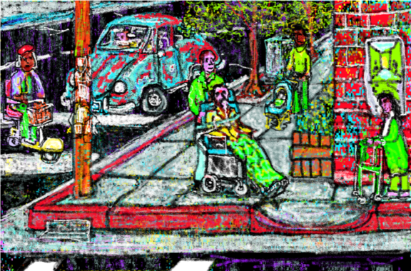

| Name | Concept |
|---|---|
| Charles Stross | Economics 2.0 |
| Sherry Turkle | Alone Together |
| Istvan Csicsery-Ronay | Technoscience |
| Alan Ginsberg | Moloch |
| Hardt and Negri | Empire |
| Benjamin Bratton | The Stack |
| Herbert Marcuse | One-dimensional society |
| Neil Postman | Technopoly |
| Erin Glass | invisible discipline |
| Safiya Noble | Algorithms of Oppression |
"Rocket ships, skyscrapers into the stratosphere, an underground mole world miles deep."
"Arm in arm they strolled toward the meetinghouse, a building long and low like a loaf of bread."

"Study of infrastructure begins to approach the study of culture in furthering comprehension of modern social contexts"
And no discussion. Just ‘the door dilated’. I read across it, and was two lines down before I realised what the image had been, what the words had called forth. A dilating door. It didn’t open, it irized! Dear God, now I knew I was in a future world.